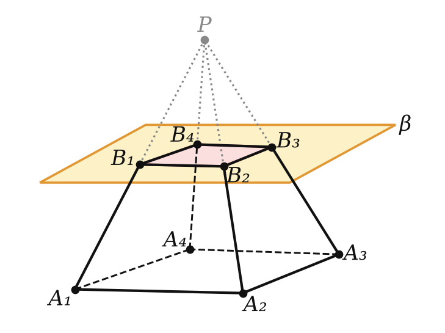
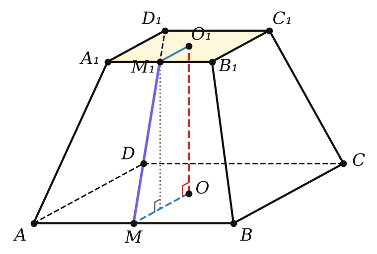
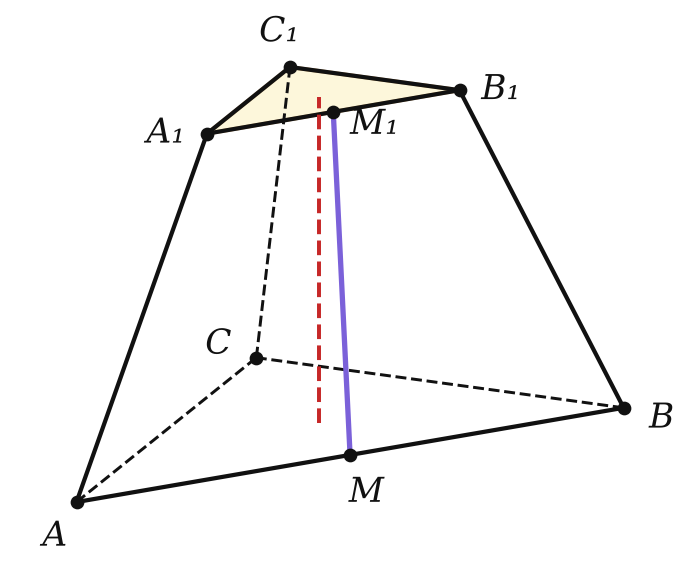

сечение, подобие оснований, площадь боковой поверхности
Через середину высоты — в 4 раза меньше.

m² = h² + (r − r₁)², l² = h² + (R − R₁)²

P₂ = 0 — пирамида; P₂ = P₁ — призма.

Рабочая трапеция — на каждом чертеже